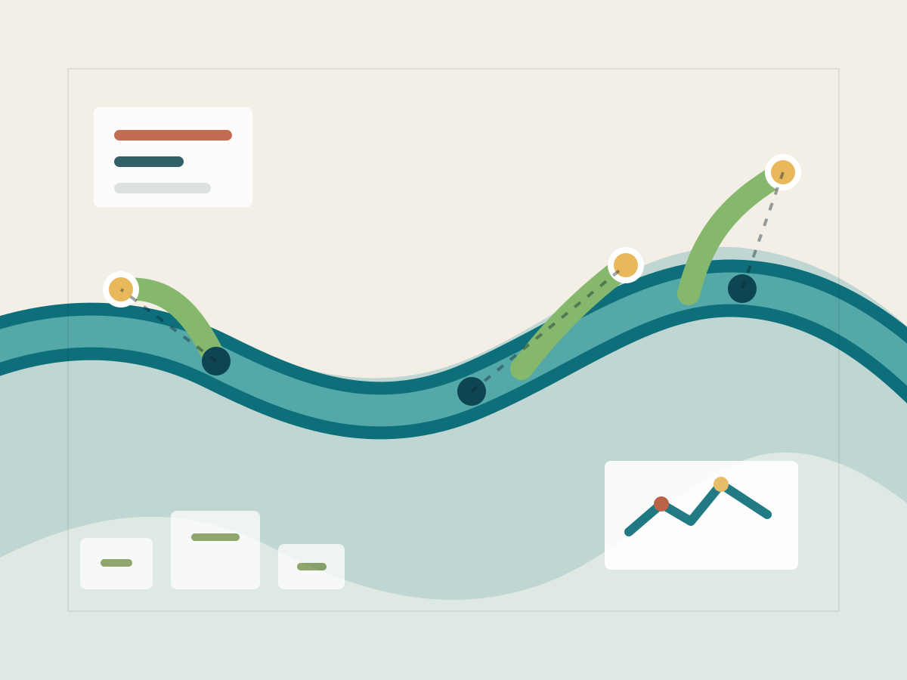

河流系统感知
整合水文站点、移动观测、遥感影像与低成本传感器，建立面向流域过程的连续观测框架。
River Systems · Urban Water · Data Intelligence
RivuLab 聚焦河流系统感知、城市水环境治理和开放科学工具。我们用现场观测、 遥感数据、数值模型与机器学习，帮助研究者、工程团队和公共机构理解水系统的变化。

Research
整合水文站点、移动观测、遥感影像与低成本传感器，建立面向流域过程的连续观测框架。
分析降雨径流、排水网络、河湖水质和热环境之间的耦合关系，支持更精细的治理决策。
构建可复现的数据流水线、模型评估方法和可视化工具，让研究成果更容易被验证与复用。
Projects
网站内容可以继续扩展为论文、成员、数据集和项目详情页。这里先放入适合公开首页展示的项目入口。
用于汇总雨量、水位、水质和遥感指标，支持跨时间尺度的快速检索与对比。
结合空间形态、污染负荷和生态指标，形成面向治理优先级排序的评估方法。
整理模型配置、输入数据和评估脚本，让水环境模拟结果可以被持续复核。
Updates
RivuLab 网站首页上线，开始整理研究方向、项目与开放资源。
启动河流系统数据资产目录设计，优先覆盖观测、遥感与模型三类资料。
规划面向 GitHub Pages 的轻量发布流程，降低内容维护和协作成本。
Collaborate
如果你关注河流、水环境、城市韧性、遥感或开放数据工具，可以通过 GitHub Issues 发起讨论，或在仓库中提交内容建议。